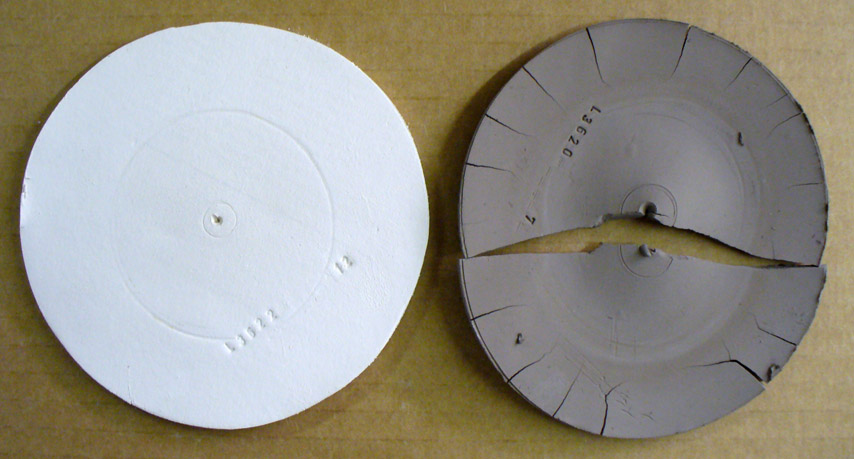
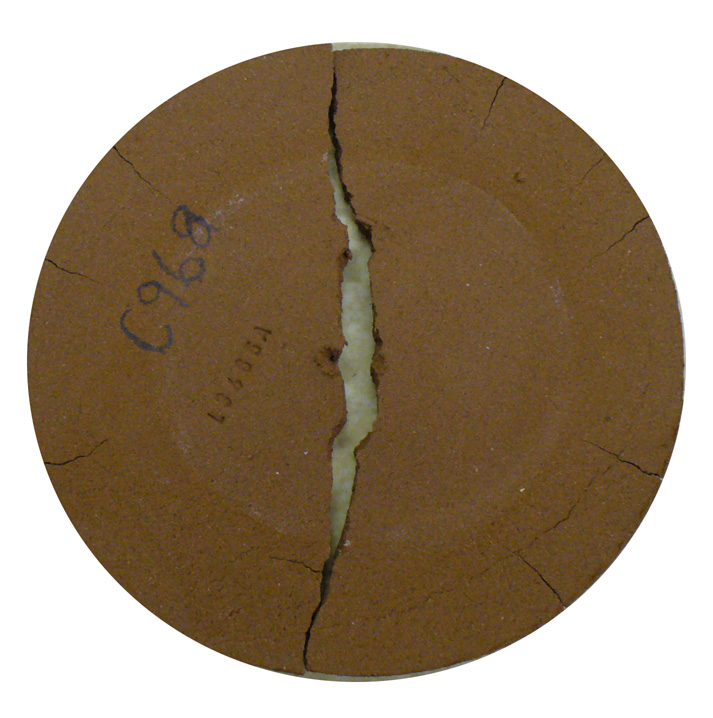
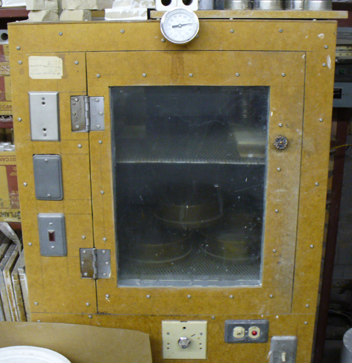
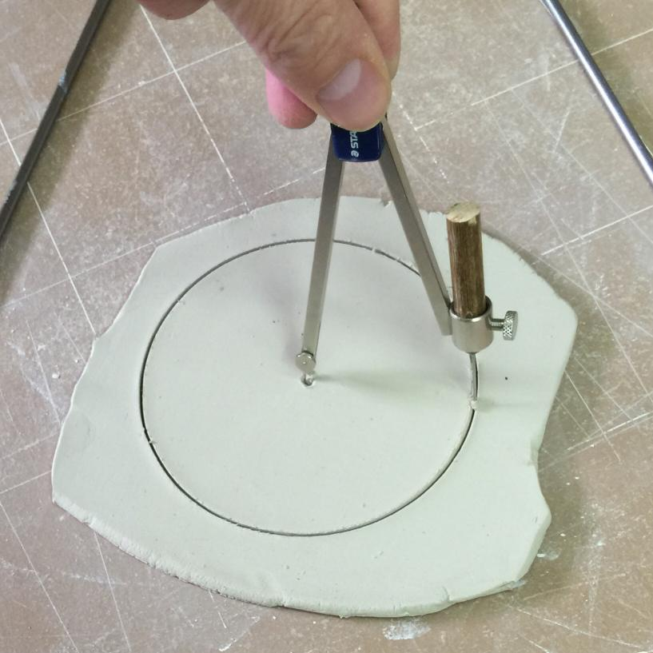
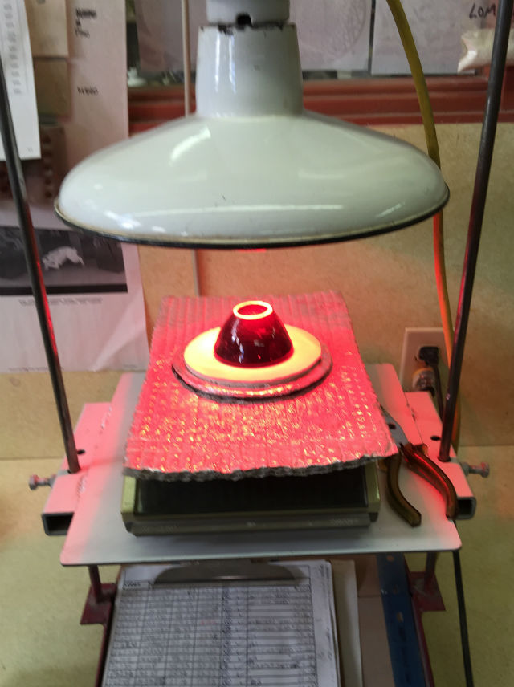
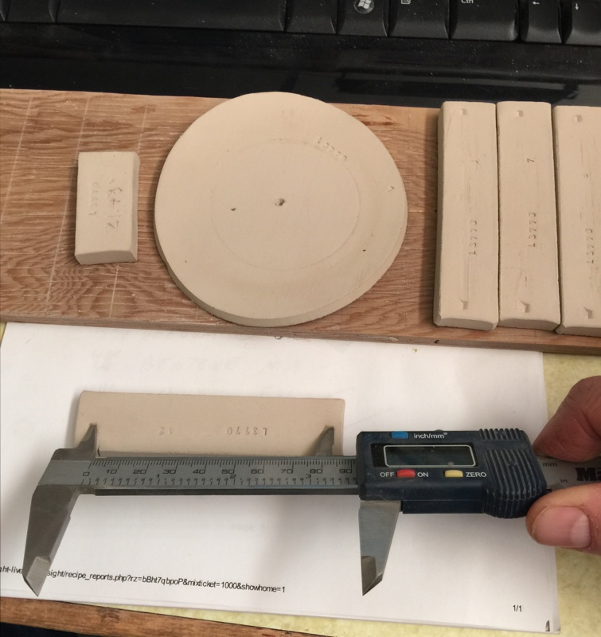

DFAC - Drying Factor Test
The DFAC test enables comparing the drying performance (resistance to cracking) of clays. It does this by speed-drying of a 12 cm by 5 mm thick rolled clay disk having a 6 cm metal disk placed on its center (the latter forces all water to migrate to the outer edge). Many factors related to the clay's mineralogy, plasticity, pugged integrity, particle size distribution, soluble salts content, etc. can be interpreted from the way and the degree to which the disc cracks, and the way its surface changes color during drying and firing.
Generally, bodies having a high drying shrinkage, e.g. ball clays, will score more poorly on this test. However, high drying strength mitigates cracking for a better score. This test is executed such that a typical body of good plasticity will crack the disk (type C crack). Calibration is done by tuning the temperature of drier or dehydrator. The crack width and number of cracks provide a way to score one body against another.
It is best to combine the procedure for this test with the LDW test and SHAB test, making the specimens for each at the same time. The specimens made during this test can also feed data to the SOLU test (for evaluating soluble salts).
The DFAC test is a comparative, not an absolute, test. The results are rationalized against drying shrinkage and dry strength. For example, a clay of high dry strength that scores poorly here may actually perform well in use when ware is evenly dried.
Video: Making SHAB, DFAC, LDW clay body test bars

This picture has its own page with more detail, click here to see it.
One-minute video. It demonstrates how to make the test bars for measuring plastic clay body (or clay material) drying and firing shrinkage, fired absorption, a bar for measuring water content and loss-on-ignition and a disk for measuring drying performance and soluble salts content. This method requires no expensive equipment and is within the reach of any technician.
How to interpret the crack in a DFAC drying disk

This picture has its own page with more detail, click here to see it.
Drying disks used for the DFAC test are 12cm in diameter and 5mm thick (wet). A crack pattern develops in almost all common pottery clays as they shrink during drying. This happens because the center portion is covered and stays soft while the perimeter dries hard. This sets up a tug-of-war with the later-drying inner section pulling at the outer rigid perimeter and forcing a crack (starting from the center). If the clay has high plasticity and dry strength it can pull so hard from the center that cracks appear at the outer dried edge to relieve the tension. Or, it can create cracks that run parallel to the outer edge but at the boundary between the inner and outer sections. The nature, number and width of the cracks are interpreted to produce a drying factor that can be recorded.
A typical DFAC drying disk of an iron stoneware clay

This picture has its own page with more detail, click here to see it.
The center portion was of this DFAC test disk was covered and so it lagged behind during drying, setting up stresses that caused the disk to crack. This test is such that most pottery clays will exhibit a crack. The severity of the crack becomes a way to compare drying performances. Notice the test also shows soluble salts concentrating around the outer perimeter, they migrated there from the center section because it was not exposed to the air.
Particle size drastically affects drying performance

This picture has its own page with more detail, click here to see it.
These DFAC testers compare the drying performance of Plainsman A2 ball clay at 10 mesh (left) and ball milled (right). This test dries a flat disk that has the center section covered to delay its progress in comparison to the outer section (thus setting up stresses). Finer particle sizes greatly increase shrinkage and this increases the number of cracks and the cracking pattern of this specimen. Notice it has also increased the amount of soluble salts that have concentrated between the two zones, more is dissolving because of the increased particle surface area.
A bentonitic clay that takes a long time to dry

This picture has its own page with more detail, click here to see it.
I finally gave up trying to dry the inner section of this DFAC test. During that test the inner part of the disk is shielded from the air flow or heat lamp. This sets up a shrinkage gradient that encourages cracking of the sample. But with some clays drying can be so slow that it can take a days. Serious cracking and high drying shrinkage almost always accompanies this phenomenon.
An example of a DFAC drying test of a bentonitic clay

This picture has its own page with more detail, click here to see it.
This disk has dried under heat (with the center part protected) for many hours. During that process it curled upward badly (flattening back out later). It is very reluctant to give up its water in the central protected section. Obviously it shrinks alot during drying and forms a network of cracks. When there are this many cracks it is difficult to characterize it, so a picture is best.
How a kaolin and ball clay compare in a dry performance test

This picture has its own page with more detail, click here to see it.
These are DFAC drying performance disks of a large-particle kaolin (OptiKast) and a ball clay (Plainsman A2). This test reveals a clay's response to uneven drying (these disks are dried with the center portion covered). The kaolin feels smoother yet its ultimate particles are ten to one hundred times bigger than a typical ball clay. Thus it shrinks much less. The ball clay has dramatically lower water permeability, water from the center protected portion resists migration to the outer edge during drying. When the inner section finally dried the outer was already rigid so it split the disk in two and pulled all the edge cracks. Most ball clays shrink more and crack worse than this (cracks concentric to the center also appear). So why use ball clay? This kaolin is so lacking in plasticity it was barely possible to even make this disk. And it is so weak that it can easily break just by handling it. Still, it is useful to make casting bodies. But the ball clay, when used as a percentage of a body mix, can produce highly plastic bodies than can be dried without trouble if done evenly.
High drying shrinkage of Plainsman A2 ball clay (DFAC disk)

This picture has its own page with more detail, click here to see it.
This DFAC test disk shows the incredible drying shrinkage that a ball clay can have. Obviously if too much of this is employed in a body recipe one can expect it to put stress on the body during drying. Nevertheless, the dry strength of this material far exceeds that of a kaolin and when used judiciously it can really improve the working properties of a body giving the added benefit of extra dry strength.
Albany Slip DFAC dried disk

This picture has its own page with more detail, click here to see it.
This shows the soluble salts in the material and the characteristic cracking pattern of a DFAC test disk when made from a low plasticity clay. Notice the edges have peeled badly during cutting, this is characteristic of very low plasticity clays.
A DFAC drying test disk of a terra cotta pottery clay from St. Ignacio, Sinaloa, Mexico

This picture has its own page with more detail, click here to see it.
This clay is used by traditional potters in the Mazatlan, Sinaloa, Mexico area. This DFAC test exhibits a very wide main crack and many edge cracks. These combine to indicate high shrinkage (a product of very high plasticity). Although the clay has some coarser grains that help channel water out, this is a very poor showing for drying performance - no large-scale manufacturer could tolerate this. But potters can and the Mexican craftsmen use it with success! How? By adapting their drying procedures. The high dry strength of this material is also a factor that helps prevent cracking. Almost any clay can be dried if the process is done evenly. And almost any can be cracked if done unevenly enough. This DFAC test is also a good indicator of the amount of soluble salts present (the slightly darker band around the perimeter), this is minimal so not scumming should appear on fired products.
Do grog additions always produce better drying performance?

This picture has its own page with more detail, click here to see it.
This DFAC test for drying performance compares a typical white stoneware body (left) and the same body with 10% added 50-80 mesh molochite grog. The character of the crack changes somewhat, but otherwise, there is no improvement. While the grog addition reduces drying shrinkage here by 0.5-0.75% it also cuts dry strength (as a result, the crack is jagged, not a clean line). The grog vents water to the surface better, notice the soluble salts do not concentrate as much. Notice another issue: The jagged edges of the disk, it is more difficult to cut a clean line in the plastic clay.
COSORI Food Dehydrator as a lab/studio drier

This picture has its own page with more detail, click here to see it.
I use this to dry our SHAB test samples and DFAC test samples. It has many racks, heats to 165F, has a timer and is well suited for the drying factor test (and drying all sorts of things). By adjusting the heat setting, it is possible to tune it to give a slight crack on our best drying clay (all other results are thus in relation to that). This oven is available on Amazon and is inexpensive.
Example of a lab drier with heating elements, fan and temperature indicator

This picture has its own page with more detail, click here to see it.
These are invaluable for creating a consistent environment in which to perform drying and shrinkage tests.
Cutting the disk for a DFAC drying factor test

This picture has its own page with more detail, click here to see it.
The plastic clay has been rolled to 3/16 inch thickness (using the metal rods and a rolling pin). The disk is cut to 12 cm diameter.
DFAC disk under a heatlamp

This picture has its own page with more detail, click here to see it.
The heat lamp dries the out edge in minutes (this photo makes it appear hotter than it really is). The center section of the disk is protected by the glazed bowl and takes an hour or more to dry. This sets up stresses that cause the disk to crack. The nature and size of the cracks enable establishing a drying factor value for the clay.
Lab testing a clay for its physical properties

This picture has its own page with more detail, click here to see it.
It only takes a few minutes to make these. But you would be amazed at how much information they can give you about a clay! These are SHAB test bars, an LDW test for water content and a DFAC test disk about to be put into a drier. The SHAB bars shrink during drying and firing, the length is measured at each stage. The LDW sample is weighed wet, dry and fired. The tin can prevents the inner portion of the DFAC disk from drying and this sets up stresses that cause it to crack. The nature of the cracking pattern and its magnitude are recorded as a Drying Factor. The numbers from all of these measurements are recorded in my account at Insight-live. It can present a complete physical properties report that calculates things like drying shrinkage, firing shrinkage, water content and LOI (from the measured values).
Grog does not always have the intended effect

This picture has its own page with more detail, click here to see it.
These DFAC test disks (drying performance) show that minor additions of grog do not reduce the fired shrinkage of this medium fire stoneware much. Nor do they improve its drying performance. Even at 20% grog, although the addition has reduced drying shrinkage and narrowed the crack somewhat, it is still there and even resembles the zero-grog version. A possible reason is that this body is coarse-particled, having a relatively small total particle surface area. The addition of the grog has significantly increased the total area.
Measuring the length of an EPK test bar to get its drying shrinkage

This picture has its own page with more detail, click here to see it.
A 10cm mark was made in the plastic bar during preparation (we dip the ends of the marker-tool into talc powder, as a parting agent, to get a crisp mark). These bars are made from the same clay, a shipment of EPK kaolin, each bar is measured dry, fired at its assigned temperature and measured again (to supply data for the SHAB test). As fired length numbers become available and are entered into the recipe record, Insight-live is able to calculate and display more of the drying and fired shrinkages. Values for the DFAC test disk and the LDW test bar can also be assessed an entered at this time.
Variables
DFAC - Drying Factor (V)
There are four major crack types:
A No cracks
B Hairline crack where no separation of the halves has occurred
C Cracks across the center where two halves have separated
D Secondary cracks running from the main and parallel to outer perimeter.
The drying factor has four digits which are:
Digit 1 Crack type
Digit 2 Total number of all cracks
Digit 3 Average mm at widest part of main crack (hairline = zero)
Digit 4 Number of hairline cracks from edge of sample coming in.
I.E. B624- means:
Crack type B, 6 cracks, a little less than 2 mm wide main crack, 4 cracks coming in from outer edge, not counting main crack.
The drying disk will develop soluble salts around the out exposed edge. Rate these as either Nil, VLight, Light, Medium, Heavy.
SOLW - Salts on Wet DFAC (V)
Treat the same as dry disk.
Procedure
1. Purpose
A test that visually displays a clay's response to uneven drying.
11. Reference Documents
The software will generate the following reports which are of assistance is carrying out this test:
Test Definition Report
Test Procedure Report
12. Reason for Re-issue
Temp 1 Initial Draft
Temp 2 Spelling and Grammer check and minor revisions.
Temp 3 Adjustment in data collection process due to better data entry facilities in the software.
2. Scope
Make one disk from each standard production or test batch and record the results.
3. Definitions
1 QC - Quality Control department
2 DFAC - Drying Factor
4. Responsibilities
Responsibilities are transferred between departments as the test proceeds. These are outlined in section 5.0.
5. Procedure
1. If not already done, create a recipe record in your Insight-live.com group account and assign a code number (QC)
2. Take or Make the Sample (Pugmill Operator, Test Sample Mixer)
2.1. Deliver the labelled sample to QC.
3. Make the Disk (QC)
3.1. Take approximately 500 grams of the pugged material and knead it for 30 seconds. Roll the kneaded lump into a cylindrical mass about twice as long as its diameter.
3.2. Place the lump on a canvas board straddled by two round metal rods of 3/16" (4.7 mm diameter). Position the lump so that the center axis runs away from you and use a rolling pin to roll it to about 1/2 as thick. Peel it up and without flipping it over turn it 90 degrees and roll half as thick again. Repeat until the rolling pin runs on the metal rods.
3.3. Carefully lift the slab of clay from both ends to free it from the canvas board and turn it over.
3.4. Use a divider or compass to cut a 12 cm diameter disk. Turn it over again and place it on a bar board.
4. Mark the Disk
4.1. In Insight-live determine the code number for the clay or mix being tested.
4.2. Prepare the stamp by setting it to stamp the code number and a specimen number of 1.
4.3. Press the stamp into the disk in two places (opposite each other across the centre point).
4.4. If multiple disks are being made (e.g. to assess drying performance for various custom stiffnesses in a run), then stamp successive specimen numbers to each.
5. Dry the Disk
5.1. Within a few minutes after rolling the disk place it in an air-circulating 90-100C drying chamber. Put a 60 mm metal disk (or can filled with sand or plaster) on the center of each disk, leaving an even ring of exposed clay all around. Wait until completely dry.
5.2. Accumulate dried disks in preparation for evaluation. When ready bring them to the computer for the next step.
6. Assign a Drying Factor
6.1. Enter it into Insight-live using the Testdata dialog (or write the factor in the disk or a record sheet for later entry).
7. Souble Salts
If the SOLU test is being performed discard the specimen, otherwise:
7.1. Enter a value for the degree of discoloration on the dry disk.
7.2. Accumulate quarter-disks for firing and further recording of soluble salt discoloration.
8. Equipment
8.1. Disk Making and Drying: The same tools are needed as for the SHAB test with the following exceptions
8.1.1. Bar width gauge, metal marking template and talc powder are not needed.
8.1.2. The thickness gauges must be 3/16 inch (4.75 mm).
8.1.3. A compass or divider which is suitable for cutting the 12 cm disk from the soft rolled clay is also needed.
8.2. Evaluation of Dried Disks
8.2.1. Vernier callipers.
8.2.2. Ceramic pencil for writing on dried specimens (preferably a dark color like black).
9. Safety
9.1. Do not breathe clay dust unnecessarily.
10. Workmanship
10.1. Clay Preparation
10.1.1. Same as for SHAB test.
10.2. Making Disks
10.2.1. It is important to roll the clay the same way each time to get consistent and comparable results.
10.2.2. Use a dry canvas board and peel the clay up frequently during rolling to make sure it does not stick to the board, making the back side of the specimens excessively rough and stretching the clay, thereby affecting the integrity of the test.
10.2.3. If the stamp does not produce a clean imprint press a little harder. If the clay lacks enough plasticity to make a readable imprint then write carefully with a needle tool.
10.2.4. When cutting the circular disk pay attention that the divider or compass does not change the setting. Also, before cutting a disk, verify that the compass or divider is set at 12 cm.
10.2.5. It is important that the disks suffer minimal edge cracks as a result of rolling and cutting as these will affect the final drying factor.
10.2.6. If you must write on a disk with a sharp pencil or needle tool do it so that it is clearly legible for later data entry. Write in small letters to minimize the chance that a crack will start at the written label.
10.3. Drying
10.3.1. Stamping the ID# on each disk twice is helpful because if a disk cracks across one the other will likely still be readable and its section can be used for possible SOLU evaluations.
10.3.2. When breaking one of the disk halves to make the quarter disk for further use in the SOLU test, make sure both exposed and non-exposed surface areas are preserved.
Related Information
Videos
Links
| Articles |
Drying Ceramics Without Cracks
Anything ceramic ware can be dried if it is done slowly and evenly enough. To dry faster optimize the body recipe, ware cross section, drying process and develop a good test to rate drying performance. |
| Articles |
Formulating a Porcelain
The principles behind formulating a porcelain are quite simple. You just need to know the purpose of each material, a starting recipe and a testing regimen. |
| Articles |
How to Find and Test Your Own Native Clays
Some of the key tests needed to really understand what a clay is and what it can be used for can be done with inexpensive equipment and simple procedures. These practical tests can give you a better picture than a data sheet full of numbers. |
| Articles |
Setting up a Clay Testing Program in Your Company or Studio
Set up a routine testing pipeline and start generating historical data that will enable your staff to understand your source materials and maintain, adjust and troubleshoot your clay body recipes. |
| Tests |
Drying Factor/Water Content/Solubles
|
| Tests |
Shrinkage/Absorption Test
SHAB Shrinkage and absorption test procedure for plastic clay bodies and materials |
| Tests |
Soluble Salts
Evaluate and compare the solubles salts content in clay bodies and materials |
| Tests |
LOI/Density/Water Content
LDW LOI, density and water content test procedure for plastic clay bodies and porcelains |
| Typecodes |
Body Tests
Tests conducted on bodies made from materials, as opposed to the materials themselves. |
| Materials |
Grog
|
| Glossary |
Drying Performance
In ceramics, drying performance is very important to optimizing production. More plastic clays shrink more and crack more, but they are also better to work with. |
| Glossary |
Drying Crack
During drying clays and porcelains shrink as they become rigid. When this occurs unevenly, cracks are the result. |
| URLs |
https://insight-live.com/insight/help/It+Starts+With+a+Lump+of+Clay-433.html
Case Study: Testing a Native Clay Using Insight-Live.com |
 PayPal | No tracking, No ads, No paywall, No transient content! Just organized, concise information constantly updated and improved. Was this helpful? Consider supporting me. |
| By Tony Hansen Follow me on        |  |
Got a Question?
Buy me a coffee and we can talk 

https://digitalfire.com, All Rights Reserved
Privacy Policy